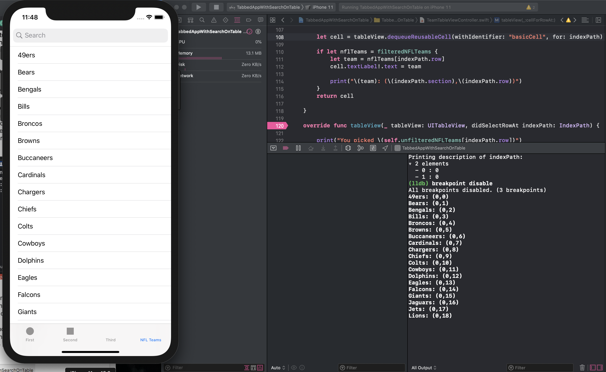

The indexPath is similar to an excel sheet in that the coordinates represent the positioin of an item. For example, item (0,1) represents the item stored in section 0, row 1 (in this example, it would be the Bears). This particular set ranges from (0,0) to (0,31), or 0 sections with rows 0 to 31.

override func tableView(_ tableView: UITableView, numberOfRowsInSection section: Int) -> Int {
// #warning Incomplete implementation, return the number of rows
guard let nflTeams = filteredNFLTeams else {
return 0
}
return nflTeams.count
}
override func tableView(_ tableView: UITableView, cellForRowAt indexPath: IndexPath) -> UITableViewCell {
let cell = tableView.dequeueReusableCell(withIdentifier: "basicCell", for: indexPath)
if let nflTeams = filteredNFLTeams {
let team = nflTeams[indexPath.row]
cell.textLabel!.text = team
}
return cell
}
override func tableView(_ tableView: UITableView, didSelectRowAt indexPath: IndexPath) {
let cell = tableView.dequeueReusableCell(withIdentifier: "basicCell", for: indexPath)
if let nflTeams = filteredNFLTeams {
let team = nflTeams[indexPath.row]
cell.textLabel!.text = team
print("You picked \(team)")
}
}